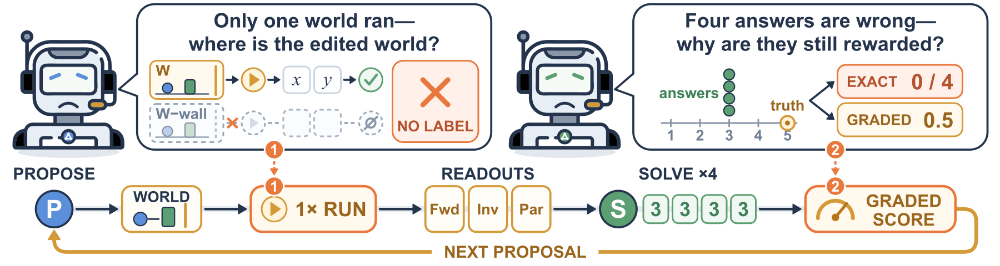
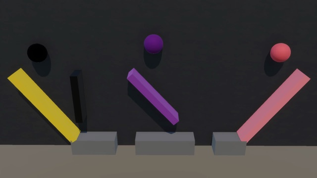
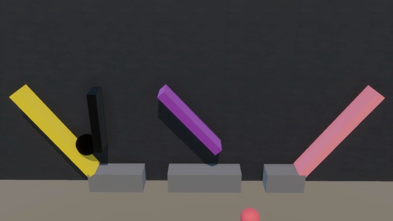
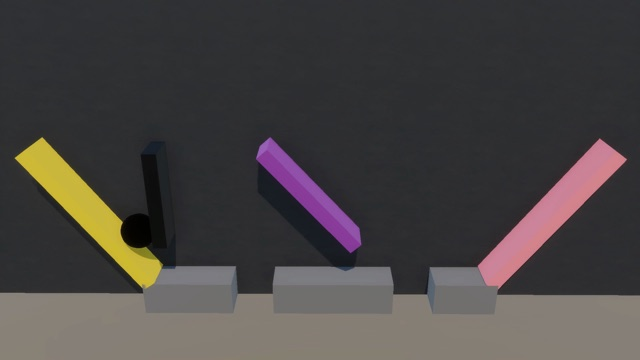
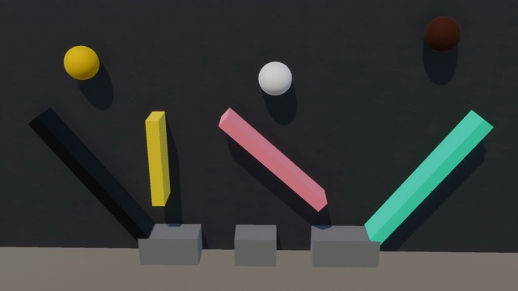
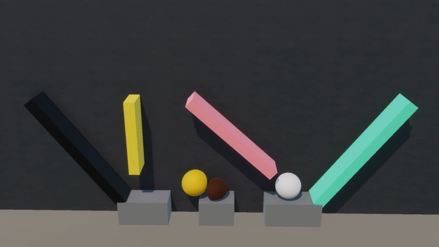
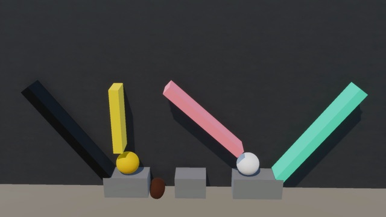

One run cannot label an edit
A single trajectory shows what happened, not what would happen with a body removed. Intervention questions can be neither built nor checked.
PhysEvolve lets a vision-language model write its own physical worlds. A simulator runs each world and its edited copies, and turns where they diverge into questions with exact answers.
The executor freezes a world, removes bodies, and replays it from the same initial state.
What can we do to make the orange ball drop into the middle pit?
The answer, A, comes from running all three edits. No one labels the question; the simulator alone decides where the ball lands.
Same program, seed and camera · Each edit also removes the green and blue balls · Original speed
Physical reasoning underpins how embodied systems understand and act in the physical world, yet vision-language models (VLMs) remain unreliable on questions about dynamics and physical causality. Progress is critically constrained by the scarcity of grounded counterfactual training data, as observational videos capture only the factual trajectory that occurred. The self-evolving paradigm offers a route beyond fixed datasets by enabling models to construct their own training problems. Extending this paradigm to physics, however, requires an external source of truth that can both validate model-proposed environments and verify alternative physical outcomes under intervention. We introduce PhysEvolve, a verifier-grounded self-evolving framework that trains VLMs for causal physical reasoning from model-proposed executable worlds and simulation-authored tasks. At each round, a shared VLM proposes executable world programs and evidence schemas; a deterministic physics engine freezes each valid world, simulates matched baseline and body-elided counterfactual branches, and synthesizes discrete, answer-bound visual tasks. Exact verifier feedback from task solving updates both the shared policy via GRPO and an adaptive curriculum over physical intents. Starting from Qwen3-VL-8B-Instruct, PhysEvolve achieves targeted gains across PhysBench, CausalPhys, and ContPhy without human intervention data, improving PhysBench Throwing by 8.8 points and ContPhy Counterfactual Removal and Goal-Pit by 7.4 and 24.4 points. These gains concentrate on interaction-sensitive and altered-world questions, demonstrating zero-shot transfer of causal principles to unseen complex dynamics (cloth, fluid, soft bodies) and real-world video.
Swapping the code interpreter of self-play for a physics simulator is not enough.

A single trajectory shows what happened, not what would happen with a body removed. Intervention questions can be neither built nor checked.
Proximity scores give partial credit to answers that are never exactly right, and the policy learns to exploit them, for example by answering with zero initial velocity.
No exact answer in 100 of 100 rounds
No exact answer in 75 of 100 rounds
No exact answer in 83 of 100 rounds
The policy explores; the fixed executor alone decides physical outcomes and correct answers.

Conditioned on a sampled physical intent, the policy writes a PhysDSL world program and an evidence schema.
The MuJoCo executor validates and freezes the world, runs matched original and body-removed branches, and binds each question to one discrete answer.
The same policy answers from the original video. Exact rewards update it with GRPO and steer the curriculum over physical intents.
Three hand-written world programs from the paper, rendered from the exact simulated poses.
Video unavailable. Open video
Ball trajectories through removable obstacles.
Video unavailable. Open video
Motion transfer through a chain of contacts.
Video unavailable. Open video
Rolling, sliding, and friction-dependent motion.
Reference scenes · Original speed
Qwen3-VL-8B-Instruct trained only on self-proposed rigid-body worlds, with no human intervention data.
+8.78 pp

Accuracy (%) · n = 410
+7.38 pp

Accuracy (%) · n = 122
+24.44 pp

Accuracy (%) · n = 90 · Qwen3-VL-32B: 26.7
PhysEvolve minus each matched 8B comparison, in percentage points. Right of zero favors PhysEvolve.
| Task | n | vs Base | vs Naive | vs w/o branch |
|---|---|---|---|---|
| ContPhy: Counterfactual Removal | 122 | +7.38 | +8.20 | +8.20 |
| ContPhy: Goal-Pit | 90 | +24.44 | +18.88 | +23.33 |
| CausalPhys · Anticipation: Collision Prediction | 300 | −2.00 | +1.00 | −3.00 |
| CausalPhys · Anticipation: Fluid Flow | 200 | +11.00 | −2.00 | +23.00 |
| CausalPhys · Anticipation: Intention Speculation | 196 | +2.55 | −4.08 | +6.12 |
| CausalPhys · Anticipation: Deformation | 200 | +0.50 | +8.00 | 0.00 |
| CausalPhys · Intervention: Action Substitution | 99 | +9.09 | +1.01 | +3.03 |
| CausalPhys · Intervention: Spatial Manipulation | 151 | +1.98 | −1.33 | +3.97 |
| CausalPhys · Intervention: Temporal Shifting | 149 | +2.69 | −2.68 | +6.71 |
| CausalPhys · Intervention: Viewpoint Transformation | 174 | −1.73 | 0.00 | 0.00 |
Both components are necessary.
No edited runs, so no counterfactual or inverse questions. Both scores fall back to the base model's level.
ContPhy Goal-Pit−23.33
ContPhy Counterfactual Removal−8.20
The shared policy learns only from Solver rollouts. It over-adapts to a degenerate stream of worlds and collapses.
CausalPhys accuracy−39.48
CausalPhys answer parse rate−71.77
| Benchmark | Base | PhysEvolve | Δ (pp) |
|---|---|---|---|
| PhysBench | 52.92 | 53.47 | +0.55 |
| CausalPhys | 53.94 | 54.50 | +0.56 |
| ContPhy | 37.08 | 39.54 | +2.46 |
Matched Qwen3-VL-8B-Instruct comparison at step 100; one training run per configuration. Gains concentrate on interaction-sensitive and altered-world questions; overall accuracy moves less. Full tables are in the paper. Data
Held-out ContPhy scenes, absent from the rigid-body training worlds. Examples from the paper's appendix.



If we removed the black floating wall and other balls, which pit would the purple ball drop into?



What can we do to make the brown ball drop into the right pit?
@misc{hu2026physevolve,
title = {PhysEvolve: Verifier-Grounded Self-Evolution for Physical
Reasoning with Executable Worlds},
author = {Hu, Jinyuan and Jiang, Yilei and Tang, Chen and Cai, Minghong
and Liu, Xinran and Yue, Xiangyu},
year = {2026},
eprint = {2610.34921},
archivePrefix = {arXiv},
primaryClass = {cs.AI}
}